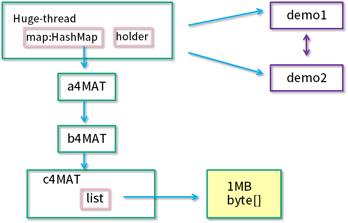
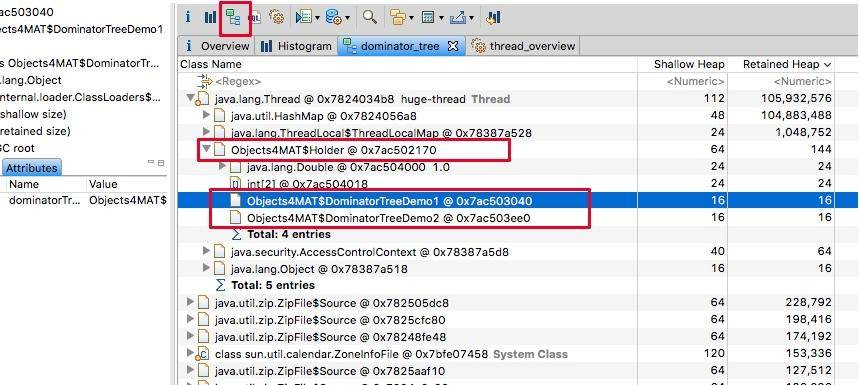
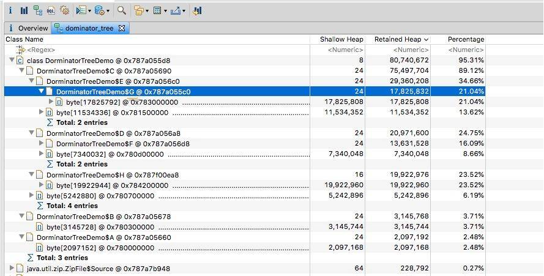
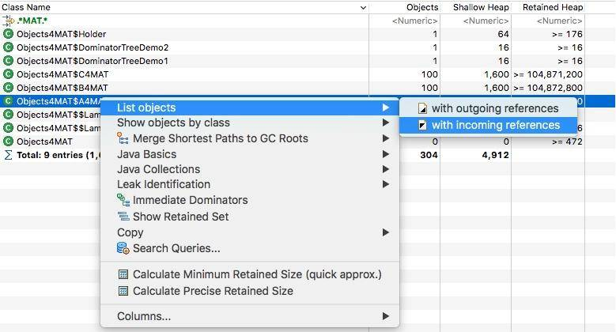
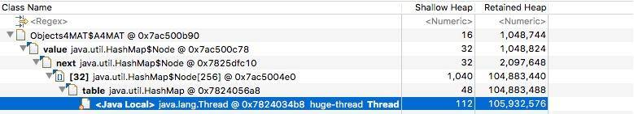

- 00 开篇词：JVM，一块难啃的骨头.md.html
- 01 一探究竟：为什么需要 JVM？它处在什么位置？.md.html
- 02 大厂面试题：你不得不掌握的 JVM 内存管理.md.html
- 03 大厂面试题：从覆盖 JDK 的类开始掌握类的加载机制.md.html
- 04 动手实践：从栈帧看字节码是如何在 JVM 中进行流转的.md.html
- 05 大厂面试题：得心应手应对 OOM 的疑难杂症.md.html
- 06 深入剖析：垃圾回收你真的了解吗？（上）.md.html
- 07 深入剖析：垃圾回收你真的了解吗？（下）.md.html
- 08 大厂面试题：有了 G1 还需要其他垃圾回收器吗？.md.html
- 09 案例实战：亿级流量高并发下如何进行估算和调优.md.html
- 10 第09讲：案例实战：面对突如其来的 GC 问题如何下手解决.md.html
- 11 第10讲：动手实践：自己模拟 JVM 内存溢出场景.md.html
- 12 第11讲：动手实践：遇到问题不要慌，轻松搞定内存泄漏.md.html
- 13 工具进阶：如何利用 MAT 找到问题发生的根本原因.md.html
- 14 动手实践：让面试官刮目相看的堆外内存排查.md.html
- 15 预警与解决：深入浅出 GC 监控与调优.md.html
- 16 案例分析：一个高死亡率的报表系统的优化之路.md.html
- 17 案例分析：分库分表后，我的应用崩溃了.md.html
- 18 动手实践：从字节码看方法调用的底层实现.md.html
- 19 大厂面试题：不要搞混 JMM 与 JVM.md.html
- 20 动手实践：从字节码看并发编程的底层实现.md.html
- 21 动手实践：不为人熟知的字节码指令.md.html
- 22 深入剖析：如何使用 Java Agent 技术对字节码进行修改.md.html
- 23 动手实践：JIT 参数配置如何影响程序运行？.md.html
- 24 案例分析：大型项目如何进行性能瓶颈调优？.md.html
- 25 未来：JVM 的历史与展望.md.html
- 26 福利：常见 JVM 面试题补充.md.html
- 捐赠
13 工具进阶：如何利用 MAT 找到问题发生的根本原因
我们知道，在存储用户输入的密码时，会使用一些 hash 算法对密码进行加工，比如 SHA-1。这些信息同样不允许在日志输出里出现，必须做脱敏处理，但是对于一个拥有系统权限的攻击者来说，这些防护依然是不够的。攻击者可能会直接从内存中获取明文数据，尤其是对于 Java 来说，由于提供了 jmap 这一类非常方便的工具，可以把整个堆内存的数据 dump 下来。
比如，“我的世界”这一类使用 Java 开发的游戏，会比其他语言的游戏更加容易破解一些，所以我们在 JVM 中，如果把密码存储为 char 数组，其安全性会稍微高一些。
这是一把双刃剑，在保证安全的前提下，我们也可以借助一些外部的分析工具，帮助我们方便的找到问题根本。
有两种方式来获取内存的快照。我们前面提到过，通过配置一些参数，可以在发生 OOM 的时候，被动 dump 一份堆栈信息，这是一种；另一种，就是通过 jmap 主动去获取内存的快照。
jmap 命令在 Java 9 之后，使用 jhsdb 命令替代，它们在用法上，区别不大。注意，这些命令本身会占用操作系统的资源，在某些情况下会造成服务响应缓慢，所以不要频繁执行。
jmap -dump:format=b,file=heap.bin 37340
jhsdb jmap --binaryheap --pid 37340
1. 工具介绍
有很多工具能够帮助我们来分析这份内存快照。在前面已多次提到 VisualVm 这个工具，它同样可以加载和分析这份 dump 数据，虽然比较“寒碜”。
专业的事情要有专业的工具来做，今天要介绍的是一款专业的开源分析工具，即 MAT。
MAT 工具是基于 Eclipse 平台开发的，本身是一个 Java 程序，所以如果你的堆快照比较大的话，则需要一台内存比较大的分析机器，并给 MAT 本身加大初始内存，这个可以修改安装目录中的 MemoryAnalyzer.ini 文件。
来看一下 MAT 工具的截图，主要的功能都体现在工具栏上了。其中，默认的启动界面，展示了占用内存最高的一些对象，并有一些常用的快捷方式。通常，发生内存泄漏的对象，会在快照中占用比较大的比重，分析这些比较大的对象，是我们切入问题的第一步。

点击对象，可以浏览对象的引用关系，这是一个非常有用的功能：
- outgoing references 对象的引出
- incoming references 对象的引入
path to GC Roots 这是快速分析的一个常用功能，显示和 GC Roots 之间的路径。

另外一个比较重要的概念，就是浅堆（Shallow Heap）和深堆（Retained Heap），在 MAT 上经常看到这两个数值。

浅堆代表了对象本身的内存占用，包括对象自身的内存占用，以及“为了引用”其他对象所占用的内存。
深堆是一个统计结果，会循环计算引用的具体对象所占用的内存。但是深堆和“对象大小”有一点不同，深堆指的是一个对象被垃圾回收后，能够释放的内存大小，这些被释放的对象集合，叫做保留集（Retained Set）。

如上图所示，A 对象浅堆大小 1 KB，B 对象 2 KB，C 对象 100 KB。A 对象同时引用了 B 对象和 C 对象，但由于 C 对象也被 D 引用，所以 A 对象的深堆大小为 3 KB（1 KB + 2 KB）。
A 对象大小（1 KB + 2 KB + 100 KB）> A 对象深堆 > A 对象浅堆。
2. 代码示例
import java.util.ArrayList;
import java.util.HashMap;
import java.util.List;
import java.util.Map;
import java.util.stream.IntStream;
public class Objects4MAT {
static class A4MAT {
B4MAT b4MAT = new B4MAT();
}
static class B4MAT {
C4MAT c4MAT = new C4MAT();
}
static class C4MAT {
List<String> list = new ArrayList<>();
}
static class DominatorTreeDemo1 {
DominatorTreeDemo2 dominatorTreeDemo2;
public void setValue(DominatorTreeDemo2 value) {
this.dominatorTreeDemo2 = value;
}
}
static class DominatorTreeDemo2 {
DominatorTreeDemo1 dominatorTreeDemo1;
public void setValue(DominatorTreeDemo1 value) {
this.dominatorTreeDemo1 = value;
}
}
static class Holder {
DominatorTreeDemo1 demo1 = new DominatorTreeDemo1();
DominatorTreeDemo2 demo2 = new DominatorTreeDemo2();
Holder() {
demo1.setValue(demo2);
demo2.setValue(demo1);
}
private boolean aBoolean = false;
private char aChar = '\0';
private short aShort = 1;
private int anInt = 1;
private long aLong = 1L;
private float aFloat = 1.0F;
private double aDouble = 1.0D;
private Double aDouble_2 = 1.0D;
private int[] ints = new int[2];
private String string = "1234";
}
Runnable runnable = () -> {
Map<String, A4MAT> map = new HashMap<>();
IntStream.range(0, 100).forEach(i -> {
byte[] bytes = new byte[1024 * 1024];
String str = new String(bytes).replace('\0', (char) i);
A4MAT a4MAT = new A4MAT();
a4MAT.b4MAT.c4MAT.list.add(str);
map.put(i + "", a4MAT);
});
Holder holder = new Holder();
try {
//sleep forever , retain the memory
Thread.sleep(Integer.MAX_VALUE);
} catch (InterruptedException e) {
e.printStackTrace();
}
};
void startHugeThread() throws Exception {
new Thread(runnable, "huge-thread").start();
}
public static void main(String[] args) throws Exception {
Objects4MAT objects4MAT = new Objects4MAT();
objects4MAT.startHugeThread();
}
}
2.1. 代码介绍
我们以一段代码示例 Objects4MAT，来具体看一下 MAT 工具的使用。代码创建了一个新的线程 “huge-thread”，并建立了一个引用的层级关系，总的内存大约占用 100 MB。同时，demo1 和 demo2 展示了一个循环引用的关系。最后，使用 sleep 函数，让线程永久阻塞住，此时整个堆处于一个相对“静止”的状态。

如果你是在本地启动的示例代码，则可以使用 Accquire 的方式来获取堆快照。

2.2. 内存泄漏检测
如果问题特别突出，则可以通过 Find Leaks 菜单快速找出问题。

如下图所示，展示了名称叫做 huge-thread 的线程，持有了超过 96% 的对象，数据被一个 HashMap 所持有。

对于特别明显的内存泄漏，在这里能够帮助我们迅速定位，但通常内存泄漏问题会比较隐蔽，我们需要更加复杂的分析。
2.3. 支配树视图
支配树视图对数据进行了归类，体现了对象之间的依赖关系。如图，我们通常会根据“深堆”进行倒序排序，可以很容易的看到占用内存比较高的几个对象，点击前面的箭头，即可一层层展开支配关系。
图中显示的是其中的 1 MB 数据，从左侧的 inspector 视图，可以看到这 1 MB 的 byte 数组具体内容。

从支配树视图同样能够找到我们创建的两个循环依赖，但它们并没有显示这个过程。

支配树视图的概念有一点点复杂，我们只需要了解这个概念即可。

如上图，左边是引用关系，右边是支配树视图。可以看到 A、B、C 被当作是“虚拟”的根，支配关系是可传递的，因为 C 支配 E，E 支配 G，所以 C 也支配 G。
另外，到对象 C 的路径中，可以经过 A，也可以经过 B，因此对象 C 的直接支配者也是根对象。同理，对象 E 是 H 的支配者。
我们再来看看比较特殊的 D 和 F。对象 F 与对象 D 相互引用，因为到对象 F 的所有路径必然经过对象 D，因此，对象 D 是对象 F 的直接支配者。
可以看到支配树视图并不一定总是能看到对象的真实应用关系，但对我们分析问题的影响并不是很大。
这个视图是非常好用的，甚至可以根据 package 进行归类，对目标类的查找也是非常快捷的。

编译下面这段代码，可以展开视图，实际观测一下支配树，这和我们上面介绍的是一致的。
public class DorminatorTreeDemo {
static class A {
C c;
byte[] data = new byte[1024 * 1024 * 2];
}
static class B {
C c;
byte[] data = new byte[1024 * 1024 * 3];
}
static class C {
D d;
E e;
byte[] data = new byte[1024 * 1024 * 5];
}
static class D {
F f;
byte[] data = new byte[1024 * 1024 * 7];
}
static class E {
G g;
byte[] data = new byte[1024 * 1024 * 11];
}
static class F {
D d;
H h;
byte[] data = new byte[1024 * 1024 * 13];
}
static class G {
H h;
byte[] data = new byte[1024 * 1024 * 17];
}
static class H {
byte[] data = new byte[1024 * 1024 * 19];
}
A makeRef(A a, B b) {
C c = new C();
D d = new D();
E e = new E();
F f = new F();
G g = new G();
H h = new H();
a.c = c;
b.c = c;
c.e = e;
c.d = d;
d.f = f;
e.g = g;
f.d = d;
f.h = h;
g.h = h;
return a;
}
static A a = new A();
static B b = new B();
public static void main(String[] args) throws Exception {
new DorminatorTreeDemo().makeRef(a, b);
Thread.sleep(Integer.MAX_VALUE);
}
}

2.4. 线程视图
想要看具体的引用关系，可以通过线程视图。我们在第 5 讲，就已经了解了线程其实是可以作为 GC Roots 的。如图展示了线程内对象的引用关系，以及方法调用关系，相对比 jstack 获取的栈 dump，我们能够更加清晰地看到内存中具体的数据。
如下图，我们找到了 huge-thread，依次展开找到 holder 对象，可以看到循环依赖已经陷入了无限循环的状态。这在查看一些 Java 对象的时候，经常发生，不要感到奇怪。

2.5. 柱状图视图
我们返回头来再看一下柱状图视图，可以看到除了对象的大小，还有类的实例个数。结合 MAT 提供的不同显示方式，往往能够直接定位问题。也可以通过正则过滤一些信息，我们在这里输入 MAT，过滤猜测的、可能出现问题的类，可以看到，创建的这些自定义对象，不多不少正好一百个。

右键点击类，然后选择 incoming，这会列出所有的引用关系。

再次选择某个引用关系，然后选择菜单“Path To GC Roots”，即可显示到 GC Roots 的全路径。通常在排查内存泄漏的时候，会选择排除虚弱软等引用。

使用这种方式，即可在引用之间进行跳转，方便的找到所需要的信息。

再介绍一个比较高级的功能。
我们对于堆的快照，其实是一个“瞬时态”，有时候仅仅分析这个瞬时状态，并不一定能确定问题，这就需要对两个或者多个快照进行对比，来确定一个增长趋势。

可以将代码中的 100 改成 10 或其他数字，再次 dump 一份快照进行比较。如图，通过分析某类对象的增长，即可辅助问题定位。
3. 高级功能—OQL
MAT 支持一种类似于 SQL 的查询语言 OQL（Object Query Language），这个查询语言 VisualVM 工具也支持。

以下是几个例子，你可以实际实践一下。
查询 A4MAT 对象：
SELECT * FROM Objects4MAT$A4MAT
正则查询 MAT 结尾的对象：
SELECT * FROM ".*MAT"
查询 String 类的 char 数组：
SELECT OBJECTS s.value FROM java.lang.String s
SELECT OBJECTS mat.b4MAT FROM Objects4MAT$A4MAT mat
根据内存地址查找对象：
select * from 0x55a034c8
使用 INSTANCEOF 关键字，查找所有子类：
SELECT * FROM INSTANCEOF java.util.AbstractCollection
查询长度大于 1000 的 byte 数组：
SELECT * FROM byte[] s WHERE s.@length>1000
查询包含 java 字样的所有字符串：
SELECT * FROM java.lang.String s WHERE toString(s) LIKE ".*java.*"
查找所有深堆大小大于 1 万的对象：
SELECT * FROM INSTANCEOF java.lang.Object o WHERE o.@retainedHeapSize>10000
如果你忘记这些属性的名称的话，MAT 是可以自动补全的。

一般，我们使用上面这些简单的查询语句就够用了。
OQL 还有一个好处，就是可以分享。如果你和同事同时在分析一个大堆，不用告诉他先点哪一步、再点哪一步，共享给他一个 OQL 语句就可以了。
如下图，MAT 贴心的提供了复制 OQL 的功能，但是用在其他快照上，不会起作用，因为它复制的是如下的内容。

4. 小结
这一讲我们介绍了 MAT 工具的使用，其是用来分析内存快照的；在最后，简要介绍了 OQL 查询语言。
在 Java 9 以前的版本中，有一个工具 jhat，可以以 html 的方式显示堆栈信息，但和 VisualVm 一样，都太过于简陋，推荐使用 MAT 工具。
我们把问题设定为内存泄漏，但其实 OOM 或者频繁 GC 不一定就是内存泄漏，它也可能是由于某次或者某批请求频繁而创建了大量对象，所以一些严重的、频繁的 GC 问题也能在这里找到原因。有些情况下，占用内存最多的对象，并不一定是引起内存泄漏问题的元凶，但我们也有一个比较通用的分析过程。
并不是所有的堆都值得分析的，我们在做这个耗时的分析之前，需要有个依据。比如，经过初步调优之后，GC 的停顿时间还是较长，则需要找到频繁 GC 的原因；再比如，我们发现了内存泄漏，需要找到是谁在搞鬼。
首先，我们高度关注快照载入后的初始分析，占用内存高的 topN 对象，大概率是问题产生者。
对照自己的代码，首先要分析的，就是产生这些大对象的逻辑。举几个实际发生的例子。有一个 Spring Boot 应用，由于启用了 Swagger 文档生成器，但是由于它的 API 关系非常复杂，嵌套层次又非常深（每次要产生几百 M 的文档！），结果请求几次之后产生了内存溢出，这在 MAT 上就能够一眼定位到问题；而另外一个应用，在读取数据库的时候使用了分页，但是 pageSize 并没有做一些范围检查，结果在请求一个较大分页的时候，使用 fastjson 对获取的数据进行加工，直接 OOM。
如果不能通过大对象发现问题，则需要对快照进行深入分析。使用柱状图和支配树视图，配合引入引出和各种排序，能够对内存的使用进行整体的摸底。由于我们能够看到内存中的具体数据，排查一些异常数据就容易得多。
可以在程序运行的不同时间点，获取多份内存快照，对比之后问题会更加容易发现。我们还是用一个例子来看。有一个应用，使用了 Kafka 消息队列，开了一般大小的消费缓冲区，Kafka 会复用这个缓冲区，按理说不应该有内存问题，但是应用却频繁发生 GC。通过对比请求高峰和低峰期间的内存快照，我们发现有工程师把消费数据放入了另外一个 “内存队列”，写了一些画蛇添足的代码，结果在业务高峰期一股脑把数据加载到了内存中。
上面这些问题通过分析业务代码，也不难发现其关联性。问题如果非常隐蔽，则需要使用 OQL 等语言，对问题一一排查、确认。
可以看到，上手 MAT 工具是有一定门槛的，除了其操作模式，还需要对我们前面介绍的理论知识有深入的理解，比如 GC Roots、各种引用级别等。
在很多场景，MAT 并不仅仅用于内存泄漏的排查。由于我们能够看到内存上的具体数据，在排查一些难度非常高的 bug 时，MAT 也有用武之地。比如，因为某些脏数据，引起了程序的执行异常，此时，想要找到它们，不要忘了 MAT 这个老朋友。
© 2019 - 2023 Liangliang Lee. Powered by gin and hexo-theme-book.